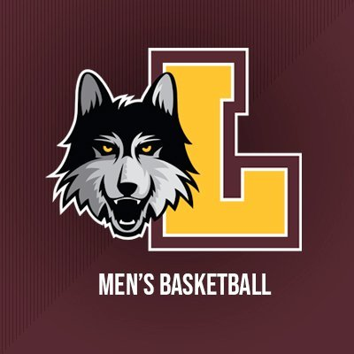

Loyola Chicago
Loyola Chicago were a little bit less of an unknown this year due to their incredible run in the 2018 Tournament where they made it all the way to the Final Four as an 11 seed. This year they came in as an 8 seed, but still played the underdog role nonetheless. In the round of 64 they defeated a tough Georgia Tech team by 11 points. In the next round they faced off against 1 seed Illinois who many predicted to have a long run and possibly win the championship. Those plans were shattered as Loyola Chicago beat them by 13 points. In the Sweet Sixteen they came up against 12 seed Oregon State who were on an incredible run of their own. Oregon State went on to win by 7 points eliminating Loyola Chicago from the tournament. Two successful tournamnents in a span of four years for Loyola Chicago is impressive and it looks very possible that they can establish themself as a strong basketball school.